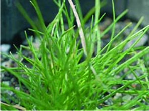
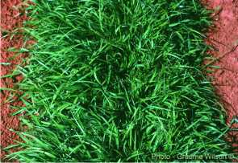
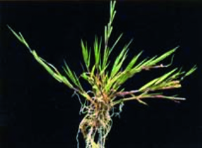
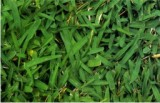

Se da el nombre de césped, grama, hierba o pasto a una docena de especies de gramíneas (familia Poaceae) que crecen formando una cubierta densa y verde. Se utilizan como plantas ornamentales en prados y jardines o como terreno para la práctica de diversos deportes y actividades recreativas de campo.
Mantenimiento y cuidados del Céspedes
A pesar de lo simple que parece, un césped necesita de unos preparativos concienzudos: una tierra de buena calidad y bien drenada de una profundidad de 20 a 30 centímetros. Se deberá en primer lugar eliminar las malas hierbas, y aportar una buena dosis de estiércol o abono mineral completo.
Los especialistas ponen a disposición muy variadas fórmulas de semillas, teniendo en cuenta la calidad del suelo y su posterior utilización. La siembra tendrá lugar en septiembre en los terrenos ligeros para que soporte mejor el siguiente verano.
En los terrenos más pesados será mejor sembrar en primavera para evitar sufra demasiado con los fríos del invierno. Los bordes se siembran en línea en surcos realizados con anterioridad y el resto arrojando la semilla en la tierra. A continuación se pasa el rastrillo para ayudar a la semilla a introducirse, y posteriormente un rodilío para apretar la tierra. El primer riego deberá darse en varias etapas.
Las labores de consevación son determinantes para mantener un césped o pradera en perfecto estado de salud, lo que redundará en el mejor aspecto y valor estético. Las más normales son la siega, el riego y el abonado, a las que se suman otras de carácter complementario realizadas esporádicamente pero de gran ayuda en su manutención.
Siega
Se efectúa con máquinas específicas, en las que hay que revisar el estado de las cuchillas con regularidad para que desarrollen su trabajo con precisión y sin dejar excesivos desgarros en los extremos de la hierba. Debe realizarse con la frecuencia que el crecimiento del prado demanda, para mantener una altura regular durante todo el año.
Riego
Es imprescindible en céspedes y praderas de calidad. Actualemente existen sistemas de riego por aspersión que se insertan en el terreno o bien se montan sobre él para un mejor aprovechamiento y reparto del agua.
Escarificado
Labor que se realiza con máquinas o con herramientas de mano, dependiente de la superficie a trabajar. Consiste en la extracción de los restos que se acumulan en la base de las cepas herbáceas. Tiene efectos espectaculares.
Aireado
Hecho también con máquinas o con rodillo provisto de púas. En ambos casos se practican orificios en el terreno, favoreciendo la aireación de la zona radicular del césped, con lo que se logra un mayor vigor que le da un inmejorable aspecto.

BAHÍA-GRASS,

AGROSTIS CANINA

AGROSTIS STOLONIFERAs

Grama Brsileña
CONTACTOS
Vivero Florisanto
Telefonos: 3135058066 - 3126688884
Email:vivero-florisanto@hotmail.com
Dirección: Calle 29 # 38-70 Via Planeta Rica K2